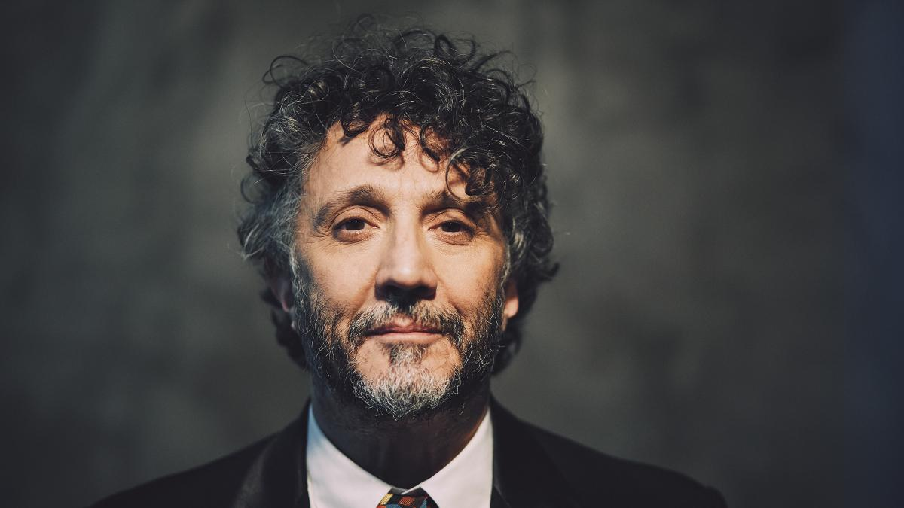

Fito Páez
Es un cantante, compositor, músico y director de cine argentino, es apodado "El trovador del rock argentino" y uno de los más importantes exponentes del rock de ese pais. Su obra musical está compuesta por 27 álbumes de estudio, 1 maxi sencillo, 4 álbumes en directo, 3 dvd´s, 12 albumes recopilatorios y numerosas colaboraciones junto a destacados artistas internacionales. El artista logró su definitiva proyeccion internacional a principio de los años noventa cuando publicó los álbumes "El amor después del amor" (1992) y "Circo Beat" (1992) que se convirtieron en grandes éxitos comerciales, vendiendo más de un millón de copias solo con el primero.
